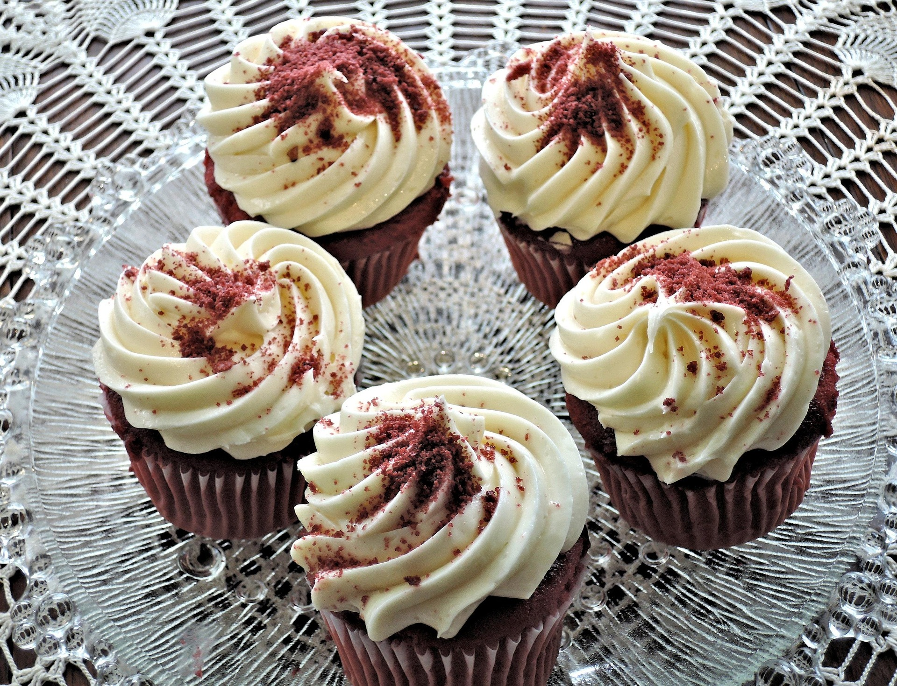

Red Velvet Cupcakes

Description
These red velvet cupcakes are perfectly sweet and wonderfully moist with a
pleasant hint of tanginess. This easy dessert will quickly become a staple in your
recipe box!
Ingredients
Cake:
- 2 ½ cups flour
- ½ cup unsweetened cocoa powder
- 1 teaspoon baking soda
- ½ teaspoon salt
- 2 cups sugar
- 1 cup butter, softened
- 4 large eggs
- 1 cup sour cream
- ½ cup milk
- 1 (1 ounce) bottle McCormick Red Food Color
- 2 teaspoons McCormick Pure Vanilla Extract
Vanilla Cream Cheese Frosting:
- 1 (8 ounce) package cream cheese, softened
- ¼ cup butter, softened
- 2 tablespoons sour cream
- 2 teaspoons McCormick Pure Vanilla Extract
- 1 (16 ounce) box confectioners' sugar
Steps
- Gather all ingredients and preheat the oven to 350 degrees F (175 degrees C)
. Line 30 muffin cups with paper liners.
- Make cake: Mix together flour, cocoa powder, baking soda, and salt in a medium
bowl; set aside.
- Beat sugar and butter in a large bowl with an electric mixer on medium speed
until light and fluffy, about 5 minutes. Beat in eggs, one at a time.
- Mix in sour cream, milk, food color, and vanilla.
- Gradually beat in flour mixture on low speed until just blended; do not over-
beat. Spoon batter into the prepared muffin cups, filling each 2/3 full.
- Bake in the preheated oven until a toothpick inserted into a cupcake comes out
clean, about 20 minutes. Cool in the pans on a wire rack for 5 minutes. Remove
cupcakes from the pans; cool completely.
- While cupcakes are cooling, make frosting: Beat cream cheese, butter, sour
cream, and vanilla extract in a large bowl until light and fluffy. Gradually beat in
confectioners' sugar until smooth.
- Spread or pipe frosting onto cooled cupcakes.
Home